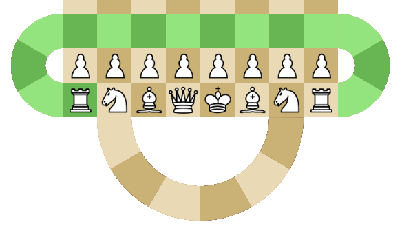
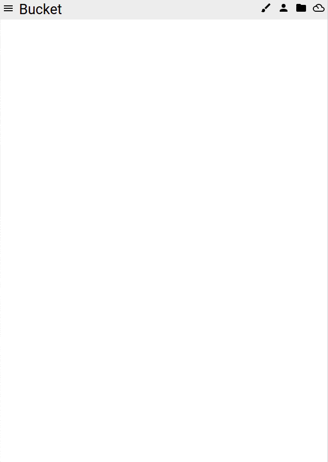
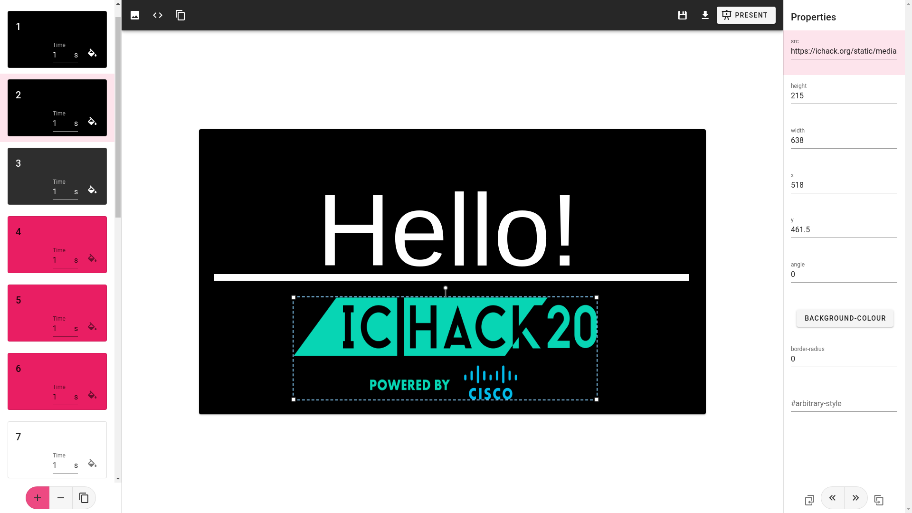
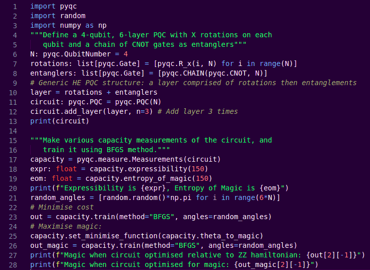
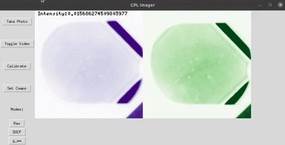

Ronan Docherty
About:
I'm a graduate from Imperial College London with a Master's degree in Physics who is currently doing a PhD in machine learning for materials science with the TLDR group at Imperial. I enjoy puzzles, programming and making kitsch webapps.
Personal Projects:




Academic Projects:


ChiraSnap: a cheap, compact circularly polarised imaging system capable of measuring
intensities of orthogonal circular polarisations simultaneously. Contains code and instructions
for building the physical camera (including .stl files for the casing).